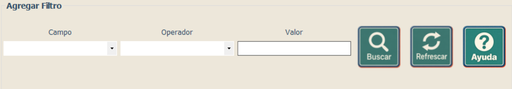

Capacitación - Consultas
Aplicación de condiciones a una consulta
Aplicación de condiciones a una consulta
Los filtros permiten limitar los resultados de acuerdo con un campo, un operador y un valor determinado. Cuando se utilicen varias condiciones, estas pueden relacionarse mediante operadores lógicos como AND u OR.

Para crear una condición, seleccione el campo que desea revisar, elija un operador y escriba el valor con el que se comparará. Por ejemplo: Edad > 30 busca registros cuya edad sea mayor que 30.
Los operadores disponibles dependen del tipo de campo seleccionado. La siguiente tabla explica qué hace cada uno:
| Operador | Qué hace | Ejemplo |
|---|---|---|
| Igual a (=) | Busca valores que coinciden con el valor indicado. | Edad = 30: muestra registros con edad 30. |
| Diferente de (<>) | Busca valores que no coinciden con el valor indicado. | Estado <> Inactivo: excluye los registros con ese estado. |
| Mayor que (>) | Busca valores superiores al indicado, sin incluirlo. | Edad > 30: muestra edades mayores de 30. |
| Mayor o igual que (>=) | Busca valores iguales o superiores al indicado. | Edad >= 30: incluye la edad 30 y las mayores. |
| Menor que (<) | Busca valores inferiores al indicado, sin incluirlo. | Edad < 30: muestra edades menores de 30. |
| Menor o igual que (<=) | Busca valores iguales o inferiores al indicado. | Edad <= 30: incluye la edad 30 y las menores. |
| Contiene | Busca el texto indicado en cualquier parte del campo. | Nombre contiene «ana»: puede encontrar «Ana» y «Mariana». |
| Empieza con | Busca valores que comienzan con el texto indicado. | Nombre empieza con «Mar»: puede encontrar «María» y «Marcos». |
| Termina con | Busca valores que finalizan con el texto indicado. | Apellido termina con «ez»: puede encontrar «López» y «Pérez». |
Cuando la consulta tiene más de una condición, AND y OR determinan cómo se combinan los filtros:
| Operador | Qué hace | Ejemplo |
|---|---|---|
| AND (Y) | El registro debe cumplir ambas condiciones. | Edad > 30 AND Estado = Activo: muestra únicamente registros activos con edad mayor de 30. |
| OR (O) | El registro debe cumplir al menos una de las condiciones. | Estado = Activo OR Estado = Pendiente: muestra registros activos o pendientes. |